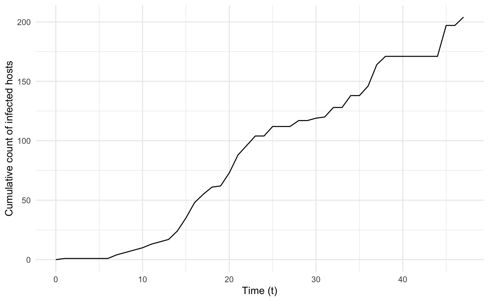
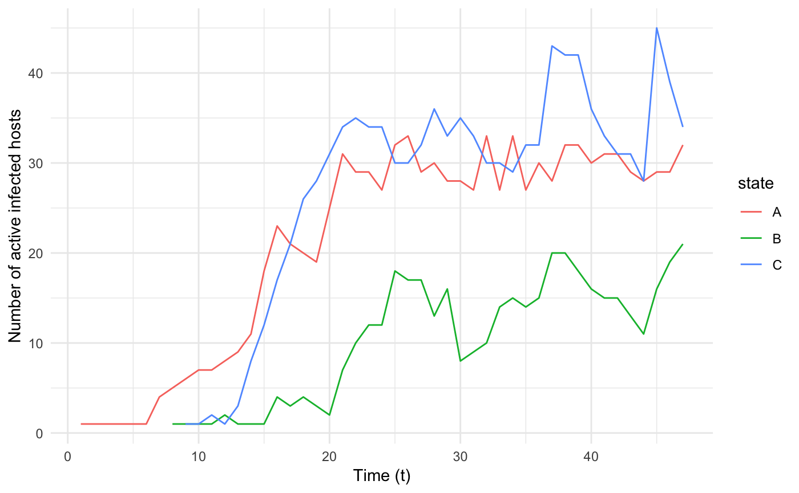
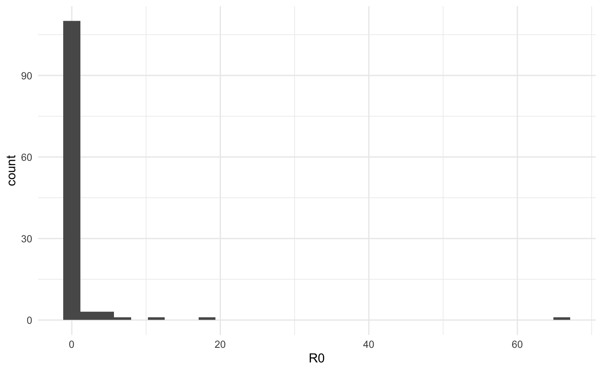
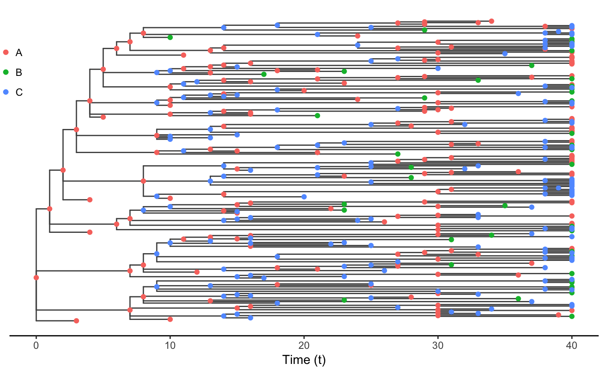
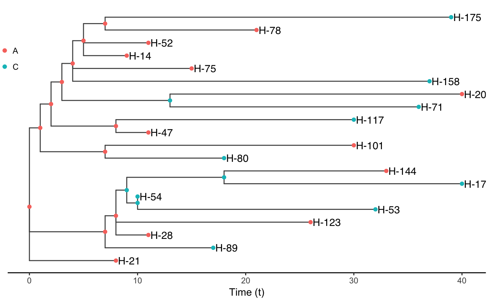
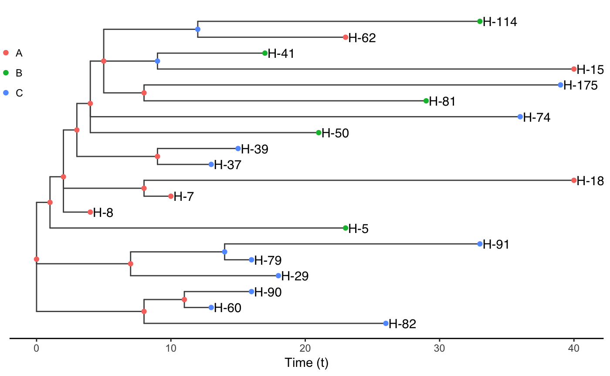

nosoiSim objectThe output of a nosoi simulation is an object of class nosoiSim that contains all the data generated during the simulation into the following slots:
total.time is the number of time steps (an integer) during which the simulation has run.type is the simulation type that was ran (either “single” or “dual” host).host.info.A is an object of the class nosoiSimOne, itself a list of elements concerning host type A (or the unique host type in case of a single-host simulation), with the following slots:
N.infected is the final number (an integer) of infected hosts.table.hosts is a table containing the results of the simulations focusing on each individual host. For more details on its structure, see below.table.state is a table containing the results of the simulations concerning the movement history of the infected hosts. For more details on its structure, see below.prefix.host is the string containing the prefix used to name the hosts (user-defined prefix.host in the nosoiSim function).popStructure is the population structure used (either “none”, “discrete” or “continuous”).host.info.B is the same as above, but for host type B (but is set to NA if a single-host was run).Host-specific elements (i.e. in host.info.A or host.info.B) in this object can be easily extracted using the function getHostData:
This function takes as its arguments your nosoi output object (of class nosoiSim), what you want to extract (either N.infected, table.hosts, table.state or prefix.host), and which host type (here pop) you are interested in (A by default, but can be B in case of dual-host simulations).
table.hosts
table.hosts, a data.table object, contains information about each host that has been simulated. In this object, one row corresponds to one host. This object can be directly extracted using the function getTableHosts:
This function takes as its arguments your nosoi output object (of class nosoiSim) and which host type (here pop) you are interested in (A by default but can be B in case of dual-host simulations).
The structure of the table is the following:
hosts.ID is the unique identifier for the host (a string of characters), based on a user-defined prefix and an integer.inf.by is the unique identifier of the host that infected the current one (stands for “infected by”).inf.in (only if structure is present) is the (discrete) location (e.g. province, country, …) or coordinates (in that case inf.in.x and inf.in.y) in which the host was initially infected (stands for “infected in”).current.in (only if structure is present) is the (discrete) location (e.g. province, country, …) or coordinates (in that case current.in.x and current.in.y) in which the host is at the end of the simulation (stands for “currently in”). A complete history of hosts movements is stored in the other table table.state (see following section).current.env.value (only if continuous structure is present) is the environmental value (i.e. raster cell value) in which the host is at the end of the simulation (stands for “current environmental value”). A complete history of the environmental value encountered by the host is stored in the other table table.state (see following section).current.cell.raster (only if continuous structure is present) is the raster cell numeric identifier in which the host is at the end of the simulation. Here also, a complete history of raster cell occupied during the simulation is stored in the other table table.state (see following section).host.count (only if structure is present) is the host count in the current state or raster cell. This value is only updated if the host count is actually used as a parameter in the simulation.inf.time is the time (in time steps) at which the host entered the simulation (i.e. got infected) (stands for “infection time”).out.time is the time (in time steps) at which the host exited the simulation.active is a number (either 0 or 1) indicating if the host is still active at the end of the simulation (1 for yes, 0 for no).param arguments in the simulator’s functions).table.state
table.state, a data.table object, contains information about the history of movement of each host that has been simulated. This table is available only if a structured population was simulated (either discrete or continuous). It can be directly extracted using the function getTableState:
This function takes as its arguments your nosoi output object (of class nosoiSim) and which host type (here pop) you are interested in (A by default but can be B in case of dual-host simulations).
The structure of the table is the following:
hosts.ID is the unique identifier for the host (a string of characters), based on a user-defined prefix and an integer.state is the (discrete) location (e.g. province, country, …) or coordinates (in that case state.x and state.y) in which the host is located during the time interval.current.env.value (only if continuous structure is present) is the environmental value (i.e. raster cell value) in which the host is at the end of the simulation (stands for “current environmental value”).current.cell.raster (only if continuous structure is present) is the raster cell numeric identifier in which the host is at the end of the simulation.time.from is the time (in time steps) at which the host entered (i.e. got infected or moved) into the state.time.to is the time (in time steps) at which the host left (i.e. excited or moved) out of the state.By simulating transmission chains, nosoi also simulates an epidemic process. nosoi provides some solutions to easily explore the dynamics of this epidemic process by following through time the number of active infected hosts as well as the cumulative number of infected hosts. It also allows to compute the exact basic reproduction number \(R_0\), defined as the average number of cases one case generates. Since all of the data generated are stored in the output nosoiSim object, more advanced exploration could also be done.
summary is a turnkey solution that computes both the dynamics of the epidemic and \(R_0\). Its only argument is your nosoi output object (of class nosoiSim):
It returns a list containing the slots:
R0, a sub-list with number of inactive hosts at the end of the simulation N.inactive on which the calculation is done, mean \(R_0\) R0.mean, and \(R_0\) distribution R0.dist. For more details on the computation behind, see below.dynamics is a data.table object with the count of the sum of infected and active host at each time of the simulation (by location/state if this simulation has been done in a discrete structured host population). See below for more details.cumulative is a data.table object with the cumulative sum of infected hosts at each time step of the simulation. See below for more details.Both the cumulative and dynamics tables can be directly extracted using the functions getCumulative and getDynamic respectively. Both functions yield a data.table object, but their structures vary slightly. cumulative has the following structure:
t is the time step (an integer).Count is the cumulative number of infected hosts at given time step (an integer).type is the host type, identified by its user-defined prefix (string of characters).dynamics has the following structure:
state (only in the case of a discrete structure) is the state (a string of characters, usually).Count is the number of active infected hosts at given time step (an integer) by state (in the case of a discrete structure).type is the host type, identified by its user-defined prefix (string of characters).t is the time step (an integer).These can be used to plot the epidemiological dynamics of the simulated transmission chain. Here for example, we simulate a single introduction of a single-host pathogen between 3 different locations/states (named “A”, “B”, and “C”), with constant exit and move probabilities as well as a number of contacts dependent on the location and host count in each location:
library(nosoi)
t_incub_fct <- function(x){rnorm(x,mean = 5,sd=1)}
p_max_fct <- function(x){rbeta(x,shape1 = 5,shape2=2)}
p_Move_fct <- function(t){return(0.1)}
p_Exit_fct <- function(t){return(0.05)}
proba <- function(t,p_max,t_incub){
if(t <= t_incub){p=0}
if(t >= t_incub){p=p_max}
return(p)
}
time_contact <- function(t, current.in, host.count){
temp.val = 30 - host.count
if(temp.val <= 0) {
return(0)
}
if(temp.val >= 0) {
if(current.in=="A"){
return(round((temp.val/30)*rnorm(1, 3, 1), 0))}
if(current.in=="B"){return(0)}
if(current.in=="C"){
return(round((temp.val/30)*rnorm(1, 6, 1), 0))}
}
}
transition.matrix = matrix(c(0,0.2,0.4,0.5,0,0.6,0.5,0.8,0),nrow = 3, ncol = 3,dimnames=list(c("A","B","C"),c("A","B","C")))
set.seed(1050)
test.nosoiA <- nosoiSim(type="single", popStructure="discrete",
length=100,
max.infected=200,
init.individuals=1,
init.structure="A",
structure.matrix=transition.matrix,
pMove=p_Move_fct,
param.pMove=NA,
diff.nContact=TRUE,
hostCount.nContact=TRUE,
nContact=time_contact,
param.nContact=NA,
pTrans = proba,
param.pTrans = list(p_max=p_max_fct,
t_incub=t_incub_fct),
pExit=p_Exit_fct,
param.pExit=NA
)library(ggplot2)
cumulative.table <- getCumulative(test.nosoiA)
dynamics.table <- getDynamic(test.nosoiA)
ggplot(data=cumulative.table, aes(x=t, y=Count)) + geom_line() + theme_minimal() + labs(x="Time (t)",y="Cumulative count of infected hosts")
ggplot(data=dynamics.table, aes(x=t, y=Count, color=state)) + geom_line() + theme_minimal() + labs(x="Time (t)",y="Number of active infected hosts")
The output nosoiSim object can be used to compute the “real” \(R_0\), defined as the average number of cases one case generates, often estimated in epidemiological studies. The function getRO can be used directly, with the nosoiSim output as its unique argument, to generate a list containing:
N.inactive, the number of inactive hosts at the end of the simulation on which the \(R_0\) calculation is made. This is to avoid bias introduced by hosts that have not accomplished their full transmission potential (i.e. are still active).R0.mean is the \(R_0\) estimate, mean of the following R0.dist.R0.dist is the full distribution (one number is one host) of \(R_0\) estimates per host.Here for example, we simulate a single introduction of a single-host pathogen between 3 different states (named “A”, “B”, and “C”), with a constant exit and move probability as well as a number of contacts dependent of the location and host count in each location:
library(nosoi)
t_incub_fct <- function(x){rnorm(x,mean = 5,sd=1)}
p_max_fct <- function(x){rbeta(x,shape1 = 5,shape2=2)}
p_Move_fct <- function(t){return(0.1)}
p_Exit_fct <- function(t){return(0.05)}
proba <- function(t,p_max,t_incub){
if(t <= t_incub){p=0}
if(t >= t_incub){p=p_max}
return(p)
}
time_contact <- function(t, current.in, host.count){
temp.val = 30 - host.count
if(temp.val <= 0) {
return(0)
}
if(temp.val >= 0) {
if(current.in=="A"){
return(round((temp.val/30)*rnorm(1, 3, 1), 0))}
if(current.in=="B"){return(0)}
if(current.in=="C"){
return(round((temp.val/30)*rnorm(1, 6, 1), 0))}
}
}
transition.matrix = matrix(c(0,0.2,0.4,0.5,0,0.6,0.5,0.8,0),nrow = 3, ncol = 3,dimnames=list(c("A","B","C"),c("A","B","C")))
set.seed(1050)
test.nosoiA <- nosoiSim(type="single", popStructure="discrete",
length=100,
max.infected=200,
init.individuals=1,
init.structure="A",
structure.matrix=transition.matrix,
pMove=p_Move_fct,
param.pMove=NA,
diff.nContact=TRUE,
hostCount.nContact=TRUE,
nContact=time_contact,
param.nContact=NA,
pTrans = proba,
param.pTrans = list(p_max=p_max_fct,
t_incub=t_incub_fct),
pExit=p_Exit_fct,
param.pExit=NA
)getR0(test.nosoiA)
#> $N.inactive
#> [1] 117
#>
#> $R0.mean
#> [1] 1.041667
#>
#> $R0.dist
#> [1] 66 1 4 1 4 12 1 2 1 2 5 2 6 18 0 0 0 0 0 0 0 0 0
#> [24] 0 0 0 0 0 0 0 0 0 0 0 0 0 0 0 0 0 0 0 0 0 0 0
#> [47] 0 0 0 0 0 0 0 0 0 0 0 0 0 0 0 0 0 0 0 0 0 0 0
#> [70] 0 0 0 0 0 0 0 0 0 0 0 0 0 0 0 0 0 0 0 0 0 0 0
#> [93] 0 0 0 0 0 0 0 0 0 0 0 0 0 0 0 0 0 0 0 0 0 0 0
#> [116] 0 0 0 0 0As you can see, out of the 117 inactive hosts, the mean \(R_0\) is 1.041667. This does not of course reflect the distribution of \(R_0\) where most hosts actually never transmitted the infection:
data = data.frame(R0=getR0(test.nosoiA)$R0.dist)
ggplot(data=data, aes(x=R0)) + geom_histogram() + theme_minimal()
The transmission chain is the main product of a nosoi simulation. It can be extracted or visualized as such using the table.hosts table that links hosts in time. It can also be extracted in a form mimicking a phylogenetic tree, and visualized or saved as such using available tools for phylogenetic trees such as ape and tidytree. To do so, you can use the getTransmissionTree() function, which arguments are the nosoi simulation output and which host type would be the tips of the tree (“A” by default, or “B” in case a dual-host simulation).
Formally, the transmission tree is extracted as a dated phylogenetic tree where:
Such a tree is binary, and has as many tips as the total number of infected hosts, and as many nodes as the number of transmission events. It spans a time going from the first entry of the first host (usually, by convention, 0), to the exiting of the last host.
It can be seen as a proxy to represent the molecular evolution of the pathogen infecting each of the hosts.
getTransmissionTree()extracts the full transmission tree. In case of a big simulated epidemic, this can take some time. It can also be very complicated to plot/visualize.
As an example, we simulate a single introduction of a single-host pathogen between 3 different states (named “A”, “B”, and “C”), with a constant exit and move probability as well as a number of contacts dependent of the location and host count in each location:
library(nosoi)
t_incub_fct <- function(x){rnorm(x,mean = 5,sd=1)}
p_max_fct <- function(x){rbeta(x,shape1 = 5,shape2=2)}
p_Move_fct <- function(t){return(0.1)}
p_Exit_fct <- function(t){return(0.05)}
proba <- function(t,p_max,t_incub){
if(t <= t_incub){p=0}
if(t >= t_incub){p=p_max}
return(p)
}
time_contact <- function(t, current.in, host.count){
temp.val = 30 - host.count
if(temp.val <= 0) {
return(0)
}
if(temp.val >= 0) {
if(current.in=="A"){
return(round((temp.val/30)*rnorm(1, 3, 1), 0))}
if(current.in=="B"){return(0)}
if(current.in=="C"){
return(round((temp.val/30)*rnorm(1, 6, 1), 0))}
}
}
transition.matrix <- matrix(c(0,0.2,0.4,0.5,0,0.6,0.5,0.8,0),nrow = 3, ncol = 3,dimnames=list(c("A","B","C"),c("A","B","C")))
set.seed(1050)
test.nosoiA <- nosoiSim(type="single", popStructure="discrete",
length=100,
max.infected=200,
init.individuals=1,
init.structure="A",
structure.matrix=transition.matrix,
pMove=p_Move_fct,
param.pMove=NA,
diff.nContact=TRUE,
hostCount.nContact=TRUE,
nContact=time_contact,
param.nContact=NA,
pTrans = proba,
param.pTrans = list(p_max=p_max_fct,
t_incub=t_incub_fct),
pExit=p_Exit_fct,
param.pExit=NA
)The simulation runs for 46 time steps and infected 204 hosts. The following transmission tree can thus be extracted (as a tidytree::treedata object) and plotted using ggtree:
library(ggplot2)
library(ggtree)
test.nosoiA.tree <- getTransmissionTree(test.nosoiA)
ggtree(test.nosoiA.tree, color = "gray30") + geom_nodepoint(aes(color=state)) + geom_tippoint(aes(color=state)) +
theme_tree2() + xlab("Time (t)") + theme(legend.position = c(0,0.8),
legend.title = element_blank(),
legend.key = element_blank()) 
Each color point represents the location/state, either at transmission (a node) or a host when it exits the simulation (or the end point of the simulation; a tip). This transmission tree is timed (time steps of the simulation). As you can see, no transmission ever occurs at location “B” (green); this is coherent with the chosen nContact function, where no infectious contact occurs when the host is in “B”.
Usually, it is unlikely that the whole transmission chain (i.e. every host) will be sampled during surveillance of an epidemic outbreak or endemic transmission. The functions sampleTransmissionTree() and sampleTransmissionTreeFromExiting() can both be used to sample hosts from this transmission chain and construct the new tree based on the existing hosts (tips).
sampleTransmissionTree() needs the following arguments:
nosoiInf, the output of simulation (nosoiSim object)tree, a treedata object created by the function getTransmissionTree() (see above).samples, a data.table object with the following entries:
hosts, unique Host.ID of the individuals to be sampled.times, time at which hosts are sampled.labels, name of the corresponding tip in the treeIn the example above, we want to sample the following 20 hosts:
#> # A tibble: 20 x 3
#> # Groups: hosts.ID [20]
#> hosts times labels
#> <chr> <dbl> <chr>
#> 1 H-7 14 H-7-sampled
#> 2 H-120 33 H-120-sampled
#> 3 H-109 32 H-109-sampled
#> 4 H-191 44 H-191-sampled
#> 5 H-10 15 H-10-sampled
#> 6 H-29 19 H-29-sampled
#> 7 H-48 22 H-48-sampled
#> 8 H-108 28 H-108-sampled
#> 9 H-99 26 H-99-sampled
#> 10 H-61 26 H-61-sampled
#> 11 H-110 40 H-110-sampled
#> 12 H-2 33 H-2-sampled
#> 13 H-67 38 H-67-sampled
#> 14 H-62 21 H-62-sampled
#> 15 H-59 28 H-59-sampled
#> 16 H-5 28 H-5-sampled
#> 17 H-177 46 H-177-sampled
#> 18 H-51 25 H-51-sampled
#> 19 H-164 40 H-164-sampled
#> 20 H-32 16 H-32-sampledtest.nosoiA.tree.sampled <- sampleTransmissionTree(test.nosoiA, test.nosoiA.tree, samples.data.table)As before, the tree obtained is a treedata object, and can be plotted:
ggtree(test.nosoiA.tree.sampled, color = "gray30") + geom_nodepoint(aes(color=state)) + geom_tippoint(aes(color=state)) + geom_tiplab(aes(label=host)) +
theme_tree2() + xlab("Time (t)") + theme(legend.position = c(0,0.8),
legend.title = element_blank(),
legend.key = element_blank()) 
Alternatively, you can sample among exited hosts (i.e. no longer active at the end of the simulation) using the function sampleTransmissionTreeFromExiting(), mimicking a sampling procedure that is destructive or cuts the hosts from the population. Be careful however, as it does not influence the epidemiological process: the hosts are only sampled when exiting the simulation.
sampleTransmissionTreeFromExiting() needs the following arguments:
tree, a treedata object created by the function getTransmissionTree() (see above).hosts, a vector with the hosts.ID of the exited hosts to sample.In our example, we want to sample these samples:
#> [1] "H-151" "H-123" "H-50" "H-64" "H-73" "H-118" "H-29" "H-85"
#> [9] "H-100" "H-95" "H-82" "H-93" "H-111" "H-45" "H-124" "H-165"
#> [17] "H-38" "H-16" "H-107" "H-155"test.nosoiA.tree.sampled.exiting <- sampleTransmissionTreeFromExiting(test.nosoiA.tree, sampled.hosts)As before, the tree obtained is a treedata object, and can be plotted:
ggtree(test.nosoiA.tree.sampled.exiting, color = "gray30") + geom_nodepoint(aes(color=state)) + geom_tippoint(aes(color=state)) + geom_tiplab(aes(label=host)) +
theme_tree2() + xlab("Time (t)") + theme(legend.position = c(0,0.8),
legend.title = element_blank(),
legend.key = element_blank()) 
All the functions mentioned above produce a tidytree::treedata object. It is a phylogenetic tree, with nodes and tips annotated with all the characteristics of the epidemics, including the geographical location when applicable. This format is described in details by his developer in this ebook.
This makes it easy to export the generated data to other software for downstream analyzes, thanks to the package treeio. For instance, the tree can be written in a BEAST compatible format thanks to function treeio::write.beast():